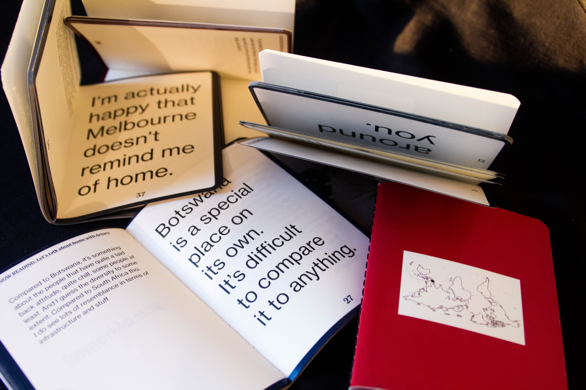
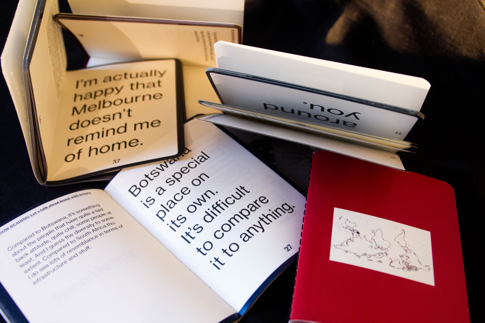

IF FOUND, PLEASE RETURN TO: HOME — 2019
I interviewed 5 of my friends from 5 different countries when I was living at an on-campus accommodation. The outcome was five mini publications packaged as one.
The goal was to capture a sense of place, and their unique experiences of living in Melbourne and what “home” means to them.
Publication
Supervised by Adam Cruickschank
 
